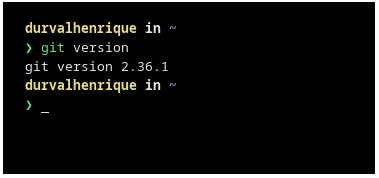

Criado em 2005 por Linus Torvalds, famoso por desenvolver o kernel Linux, o Git é um sistema de controle de versão (VCS) moderno, gratuito e de código livre projetado para lidar com tudo, desde projetos pequenos até os muito grandes, com velocidade e eficiência.
Se você está migrando para o Linux e precisa utilizar o Git no seu dia a dia, faremos um tutorial de instalação na sua distribuição e uso básico do Git das configurações iniciais até o seu primeiro commit.
Instalando o Git no Debian, Arch Linux, openSUSE e Fedora
Instalar o Git na sua distribuição Linux é bem simples, a maioria delas possui o Git em seus repositórios oficiais.
Instalando o Git no Debian / Ubuntu e distribuições derivadas
No Debian / Ubuntu e distribuições derivadas, você encontrará a versão estável mais recente do Git nos repositórios oficiais, sendo assim, para instalá-lo é muito simples, basta seguir os passos:
1 – Sincronize o repositório com o comando:
2 – Feito isso, instale o Git rodando o comando:
Instalando o Git no Fedora
Para instalar o Git no Fedora, basta rodar os comandos:
1 – Sincronize o repositório:
2 – Instale o Git executando o comando:

Instalando o Git no Arch Linux e distribuições derivadas:
Se você utiliza o Arch Linux, Manjaro ou outras distribuições derivadas, basta seguir o passo a passo para instalar o Git no seu sistema:
1 – Atualize o sistema com o comando:
Vale salientar que o Arch Linux não suporta atualizações parciais, sendo assim, é importante evitar utilizar apenas o -Sy. Sempre atualize o sistema por completo com o comando “sudo pacman -Syu” para evitar qualquer problema.
2 – Após atualizar o sistema, instale o Git com o comando:
Instalando o Git no openSUSE
Se você precisa instalar o Git no openSUSE, rode os comandos:
1 – Atualize os repositórios com o comando:
2 – Em seguida, instale o Git executando o comando:
Para verificar se o Git foi instalado corretamente, independentemente da distro, rode o comando:
Tudo certo, o Git já está instalado no seu respectivo sistema operacional, agora é só utilizá-lo conforme a sua necessidade.
Dicas para utilizar o Git no Linux
Se você está experimentando o Git pela primeira vez, iremos fazer um guia básico de utilização do sistema de controle de versão para você começar a se familiarizar.
Tudo pode ser feito através do seu emulador de terminal padrão. No nosso guia, utilizaremos o terminal integrado do VS Code.
Configuração inicial do Git
A primeira coisa que você deve fazer após instalar o Git é configurar seu nome de usuário e endereço de e-mail. Isto é importante porque cada commit usa esta informação, e ela é carimbada de forma imutável nos commits que você começa a criar:
Para isso, abra o seu emulador de terminal e execute os comando:
1 – Configure o seu nome de usuário:
2 – Configure o seu endereço de email:
Vale ressaltar que você precisará fazer isso somente uma vez se tiver usado a opção –global, porque assim o Git usará esta informação para qualquer coisa que você fizer no seu sistema. Se você quiser substituir essa informação com um nome diferente para um projeto específico, você pode rodar o comando sem a opção –global dentro daquele projeto.
Configurando editor padrão
Agora que a sua identidade está configurada, você pode escolher o seu editor de texto padrão o qual será chamado quando Git precisar que você insira alguma entrada. Se não for configurado, o Git usará o editor padrão, que, normalmente, é o Vim. Se você quiser usar um editor de texto diferente você pode rodar o seguinte comando:

Conferindo as suas informações
Se você quiser conferir se configurou o Git certinho, você pode fazer isso rodando o comando: